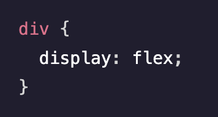

El diseño de caja flexible, comúnmente conocido como Flexbox, es un modelo de diseño que permite elementos responsivos dentro de un contenedor que pueden adaptarse automáticamente a diferentes tamaños de pantalla.

- flex: Una abreviatura que combina las propiedades flex-grow, flex-shrink y flex-basis.
- flex-basis: Define el tamaño predeterminado de un elemento flexible.
- flex-direction: Especifica la dirección en la que se distribuyen los elementos dentro de un contenedor.
- flex-flow: Una forma abreviada de especificar las propiedades flex-direction y flex-wrap.
- flex-grow: Especifica cuánto espacio puede ocupar un elemento en relación con los demás elementos del contenedor.
- flex-shrink: Especifica cuánto espacio se puede reducir un elemento en relación con los demás elementos del contenedor.
- flex-wrap: Especifica si los elementos ocuparán varias líneas y la dirección en que se distribuyen los elementos.